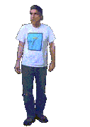

[X]
Bug? Idea? Open a GitHub issue
[X]
⌨
L
R
loading hemu…
[X]
Click the screen, then move the mouse and type — you're using the real OS.
Esc releases the mouse and is also sent to TempleOS, so it exits games and menus too.
Press Ctrl+M for the games menu, click a sprite to play. F7 draws a God word.
Fullscreen keeps every key (even Esc) inside the OS.
[X]
